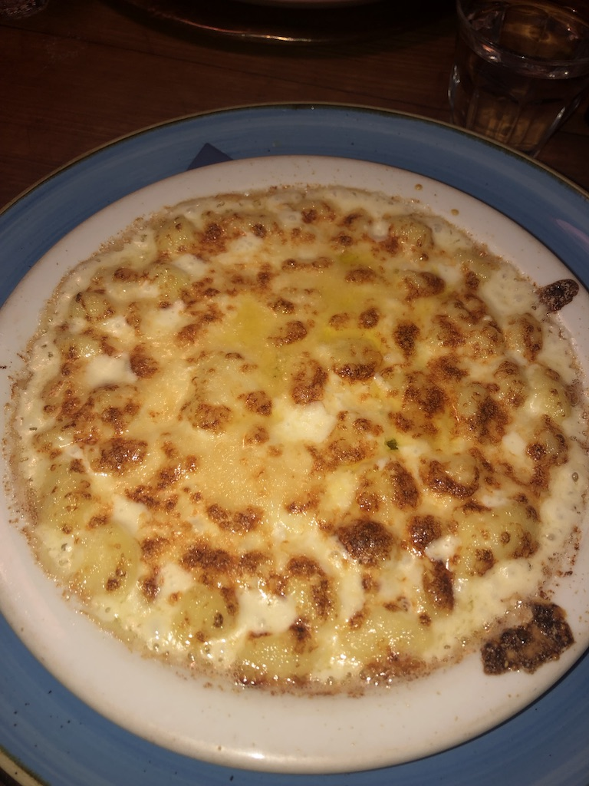

Taste authentic cuisine
One of my favorite parts about studying abroad in Florence is the food. Pasta, pizza, gelato, you’ll always be left wanting more. There are obvious must-eats, like the more well-known restaurants that have popular signature dishes and a unique charm. Some of the best spots, however, are the less known, authentic Italian cafés and restaurants, recommended by local Florentines. Although harder to find, I ate many of my favorite meals at these hidden gems.
Featured Restaurants
One of my favorite meals in Florence is the very unique dish from Acqua al Due. When you step into the restaurant, you see plates with signatures lining the walls, creating a special ambiance. The pasta with avocado and pomegrante, which is not the most traditional Italian dish, was delicious and had so many exotic flavors.
This is an image of my first meal in Florence. I was walking around the street, saw this restaurant, and spontaneously decided to walk in. The pasta I ate here is called Cacio e Pepe, and it was one of the most delicious meals that I tasted while studying abroad.
Florence is known for its steak, which are usually cooked very rare and are served red on the inside. At first, this freaked me out a bit, but once I took my first bite, I was completely impressed. The steak was so juicy and delicious.
Florence has so many stands that serve paninis for lunch. In between my classes, I would frequent the same panini place, my favorite in Florence, called I Fratellini. The two men that work the stand are hilarious and always make their customers laugh while serving them delicious meals.
This is a truffle pasta from the Mercato Centrale, or central market, in Florence. The market is home to many different vendors who serve up various fresh items, including traditional Florentine specials. This pasta is from one of the vendors that has a more established spot in the market. Although it has a lot of truffle, it was beyond delicious.
This four cheese gnocchi was my favorite pasta in Florence. The restaurant it is served at is called Osteria Santo Spirito, which can be found on the less touristy neighborhoods of the city. You can find the restaurant in a small Piazza, or square, and it will not disappoint.